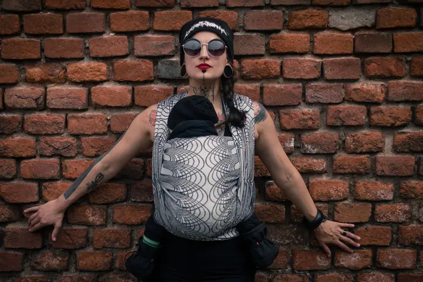

Rodinné focení
Vítaný je úplně každý: babičky, dědečkové, strýčkové i čtyřnozí miláčci. Fotíme venku, nebo v teple domova, prostě tam, kde se vaše děti cítí v klidu a bezpečí.

Jmenuji se Adéla Friesová, jsem fotografka z Pardubic a máma tří dětí. Fotím hlavně kontaktní rodinné fotografie, novorozence v náruči rodičů a ženské portréty. Bude mi …
Rezervovat termínFotografii jsem studovala v Hradci Králové a hned jsem se po hlavě vrhla do podnikání. Jsem máma dvou uličníků a jedné princezny, která se mnou momentálně jezdí fotit. Ráda fotím vaše výpravy za dobrodružstvím, mazlení doma, vítání nového člena rodiny i oslavy radostných dní.


Při focení mi záleží hlavně na klidu a pohodlí. Na miminka nesahám a nemanipuluji s nimi, nejlepším místem pro focení je vaše náruč. Momentálně se věnuji i řešení traumat z focení v projektu úsměv.prosím, se kterým mi pomáhá rodinná terapeutka Tereza Komárková.
Svoji produkci držím ekologicky a regionálně. Fotografie nechávám vyvolávat ve Kvalitní fotky na hedvábný papír, alba mi ručně tvoří PIIIR a obálky z pratelného papíru KarMa. Když zrovna nefotím rodiny, spolupracuji s českými výrobci, jako jsou Vatanai, MoniLu, UTUKUTU nebo Pardubickej Lajf, a ráda nafotím reklamní, produktovou nebo portrétní fotografii i pro vaši firmu.
Co fotím
Vítaný je úplně každý: babičky, dědečkové, strýčkové i čtyřnozí miláčci. Fotíme venku, nebo v teple domova, prostě tam, kde se vaše děti cítí v klidu a bezpečí.
Dbám na pohodlí šestinedělky i miminka. Na děťátka nesahám a nemanipuluji s nimi, nejlepším místem pro focení je vaše náruč.
Potkat se můžeme u vás doma nebo na procházce tam, kde vám bude příjemně. Focení můžete pojmout jako klidný předporodní rituál, nebo přizvat celou rodinu.
Na životopis, nebo jen pro radost. Focení přizpůsobím vašim potřebám a rozpoložení a výsledkem budou fotografie, na kterých budete vy.
Fotografie jsou ilustrační
Postup
Napíšete mi nebo zavoláte a domluvíme se, co si od focení přejete. U portrétu nebo porodu se ráda potkám předem, třeba u kávy, abychom se trochu poznaly.
Fotíme u vás doma, nebo venku na místě, které máte rádi. Hlavní je, aby se vaše děti cítily v klidu a bezpečí.
Nic nenaaranžuji násilím, s miminky nemanipuluji a nechávám prostor vašim chvílím. Vítaní jsou sourozenci, prarodiče i domácí mazlíčci.
Upravené fotografie dostanete v online galerii a vyvolané na hedvábném papíře s láskou zabalené. K focení můžete přidat i ručně vyráběné autorské album TY nebo MY.
Otázky
Rodinné focení stojí 2700 Kč, novorozenecké 3200 Kč, těhotenské 3000 Kč a portrét 4500 Kč. Balíček těhotenského a novorozeneckého focení s albem TY vychází na 7000 Kč. Cestovné není v ceně.
Ne. Na děťátka nesahám a nemanipuluji s nimi. Miminko fotím ve vaší náruči a dbám na pohodlí vás i jeho.
Ano, můžu přijet k vám domů k asistovanému porodu nebo do porodnice. Předem se ráda sejdu, abychom zjistily, jestli si sedneme. Focení porodu stojí 9000 Kč, z toho 2000 Kč je záloha za pohotovost.
Základní balíček obsahuje 10 fotografií v online galerii, vyvolaných na hedvábný papír. V neomezeném balíčku dostanete 50 až 100 fotografií online a 20 vyvolaných v papírové krabičce.